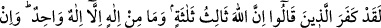
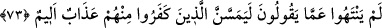
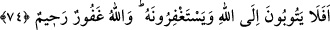

“Halbuki Mesih” onlara hitâben “demişti ki: ‘Ey İsrâiloğulları! Rabb’im ve
Rabbiniz olan Allah’a kulluk edin.’” Yani ben de sizin gibi bir kulum. Benim de sizin
de Yaratıcınız olan Allah’a kulluk edin. “Kim” ibadetinde yahut yalnız O’na mahsus
sıfatlarda ve fiillerde “Allah’a ortak koşarsa muhakkak Allah ona cenneti haram
kılar.” Çünkü cennet tevhide inananların yurdudur. İnsan nasıl kendine haram kılınan
biriyle evlenemezse, müşrik de asla cennete giremez. “Ve onun varacağı yer”
müşrikler için hazırlanmış olan “ateştir.” Allah’a ortak koşarak Allah’ın hakkına
tecavüz eden “zalimlerin yardımcıları yoktur.” Hiç kimse gerek kuvvetiyle ve gerekse
şefaatiyle onları ateşten kurtaramaz. Böylece Îsâ (a.s.)’ın sözleri tamamlanmaktadır.
Sonra Allah Teâlâ hristiyan mezheplerinden Nestûriyye ve Melkâniyye’nin bâtıl
inançlarını naklederek şöyle buyurur:
73. Andolsun “Allah, üçün üçüncüsüdür” diyenler elbette kâfir olmuşlardır.
Halbuki yalnız bir tek Tanrı vardır. Eğer bu dediklerinden vazgeçmezlerse, elbette
onlardan inkâr edenlere acı bir azap dokunacaktır.
“Andolsun ‘Allah, üçün üçüncüsüdür.’, diyenler elbette kâfir olmuşlardır.” Yani
onlar derler ki: Allah üç ilahtan biridir. İlahlık bunlar arasında müşterektir. “Halbuki”
varlıkta zât-ı vâcib, bütün mevcûdâtın yaratıcısı ve mebdei olması bakımından ibadete
müstehak “yalnız bir tek Tanrı vardır.” O, vahdaniyyet ile mevsuftur, ortak kabul
etmekten münezzehdir. “Eğer bu dediklerinden vazgeçmezlerse”, birinci ve ikinci
iddiâlarına son vermez ve tevhîde gelmezlerse “elbette onlardan inkar edenlere acı
bir azap dokunacaktır.” Bu, elemi şiddetli bir tür azaptır ki acısı onların kalplerine
ulaşır. Âyette onların kâfir oldukları tekrarlanarak iyice tebârüz ettirilmiştir.
74. Hâlâ Allah’a tevbe edip O’ndan af dilemiyorlar mı? Allah çok bağışlayan ve
esirgeyendir.
“Hâlâ Allah’a tevbe edip O’ndan af dilemiyorlar mı?” Hâlâ sapık inançlarından,
ittihad ve hulûl gibi bâtıl sözlerinden dönmüyorlar mı? Bu ifadede onların küfürde
inatlarına hayret ve tevbeye teşvik mânâsı vardır. Allah’tan af dilemeleri, tevhîd ile ve
O’na nisbet ettikleri ittihâd ve hulûlden O’nu tenzih etmeleri ile mümkündür.
Halbuki “Allah çok bağışlayan ve esirgeyendir.” Tevbe etseler, af dileseler onların